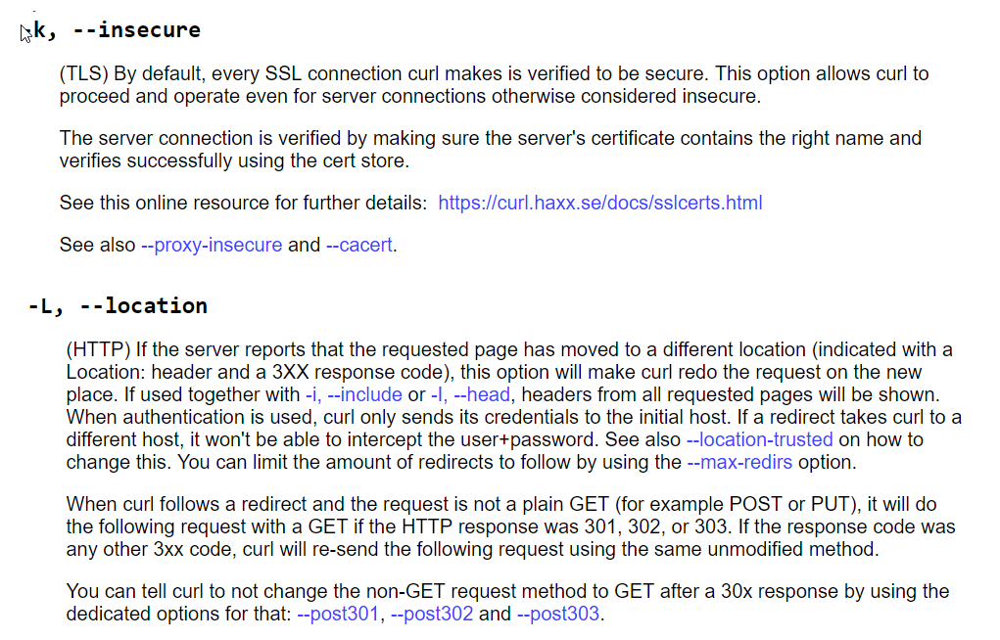
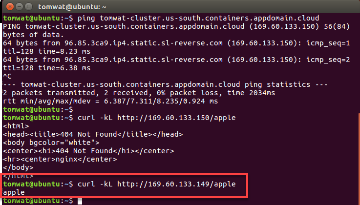
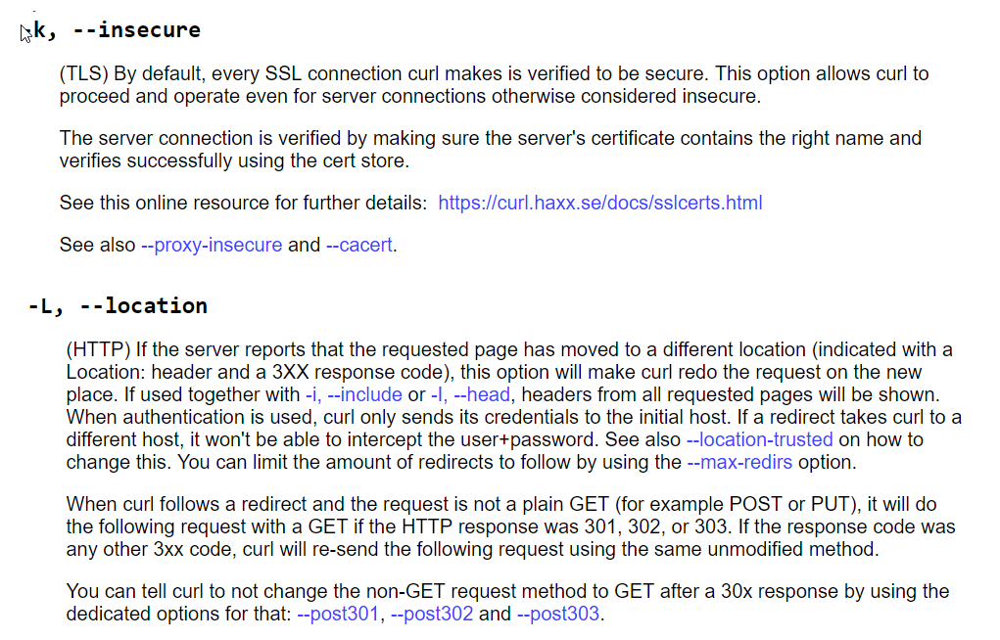
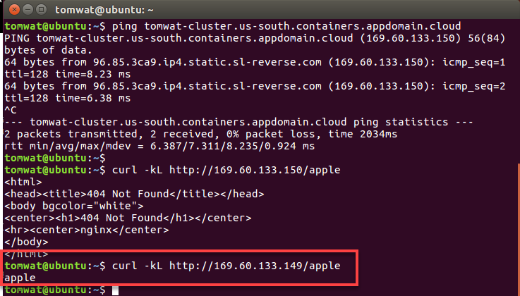
https://matthewpalmer.net/kubernetes-app-developer/articles/kubernetes-ingress-guide-nginx-example.html
In Kubernetes, an Ingress is an object that allows access to your Kubernetes services from outside the Kubernetes cluster. You configure access by creating a collection of rules that define which inbound connections reach which services.
This lets you consolidate your routing rules into a single resource. For example, you might want to send requests to example.com/api/v1/ to an api-v1 service, and requests to example.com/api/v2/ to the api-v2 service. With an Ingress, you can easily set this up without creating a bunch of LoadBalancers or exposing each service on the Node.
NodePort and LoadBalancer let you expose a service by specifying that value in the service’s type. Ingress, on the other hand, is a completely independent resource to your service. You declare, create and destroy it separately to your services.
Start by creating the “mandatory” resources for Nginx Ingress in your cluster
$ /home/tomwat/iks.sh
$ cd $HOME/skills/ingress
$ kubectl apply -f mandatory.yaml
$ kubectl apply -f cloud-generic.yaml
$ kubectl get pods -n ingress-nginx
Create two services (in default domain) to demonstrate how the Ingress routes our request. We’ll run two web applications that output a slightly different response
$ kubectl apply -f apple.yaml
$ kubectl apply -f banana.yaml
Now, declare an Ingress to route requests to /apple to the first service, and requests to /banana to second service. Check out the Ingress’ rules field that declares how requests are passed along
Test the Ingress:
$ ping tomwat-cluster.us-south.containers.appdomain.cloud
PING tomwat-cluster.us-south.containers.appdomain.cloud (169.60.133.150) 56(84) bytes of data
64 bytes from 96.85.3ca9.ip4.static.sl-reverse.com (169.60.133.150): icmp_seq=1 ttl=128 time=8.23 ms
$ curl -kL http://169.60.133.150/apple
404 Not Found
$ curl -kL http://169.60.133.149/apple
apple
Huh....why does it work on 149 and not 150?
With the Ingress running on IBM Public Kubernetes Service, looks like I have some additional configuration TODO
https://console.bluemix.net/docs/containers/cs_ingress.html#ingress
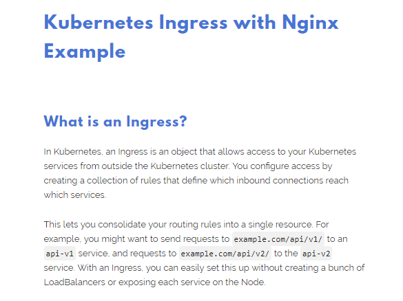
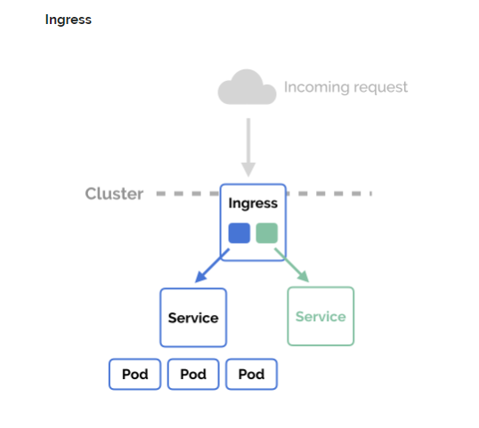
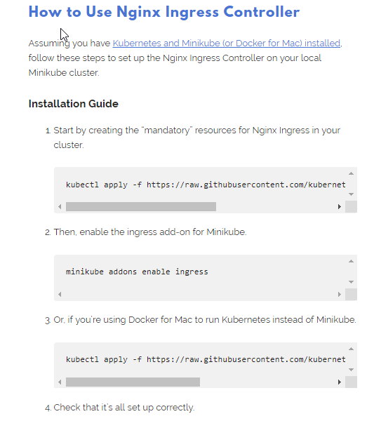
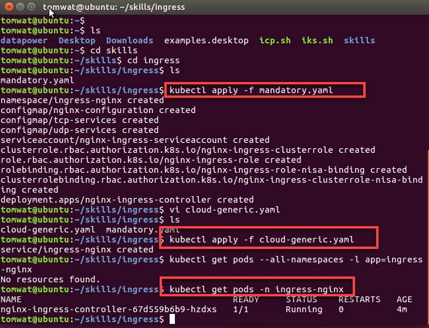
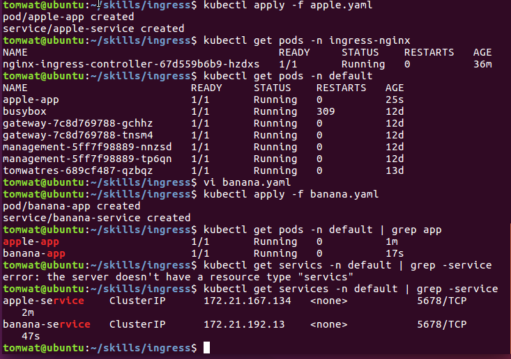
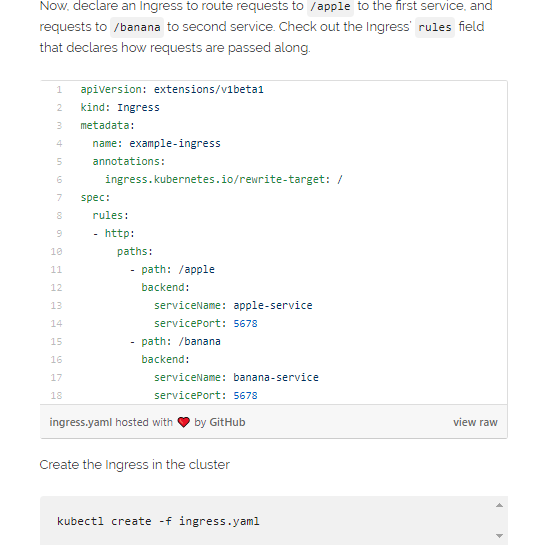
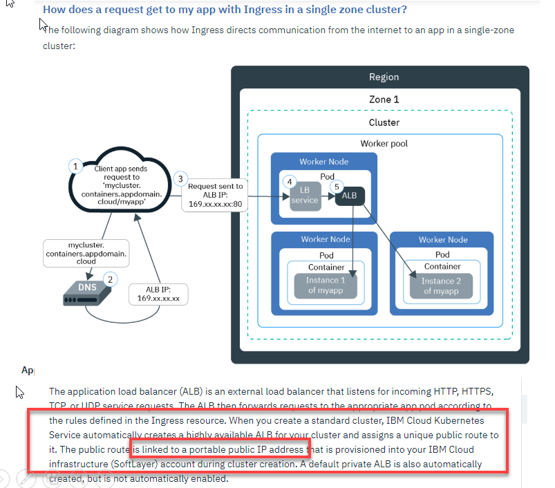
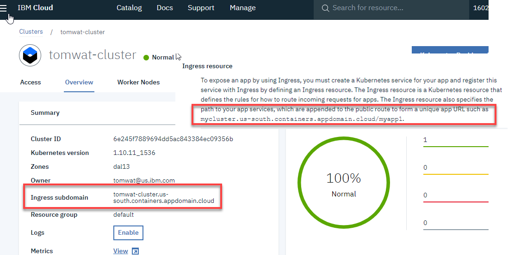
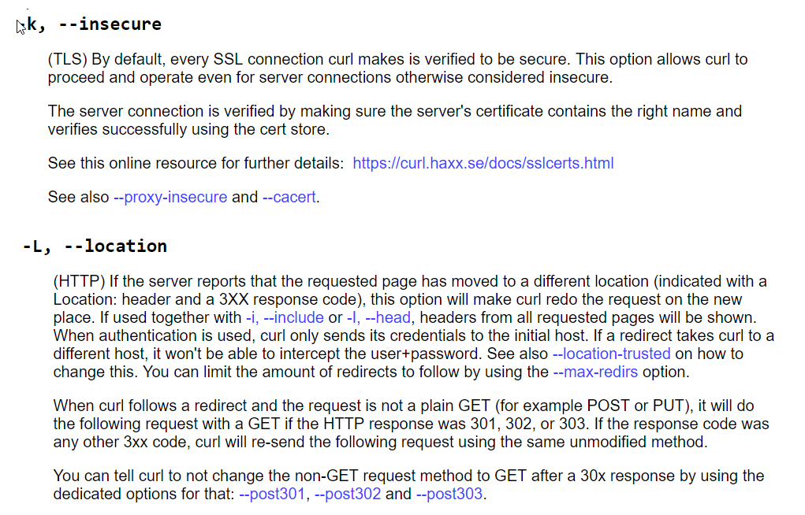
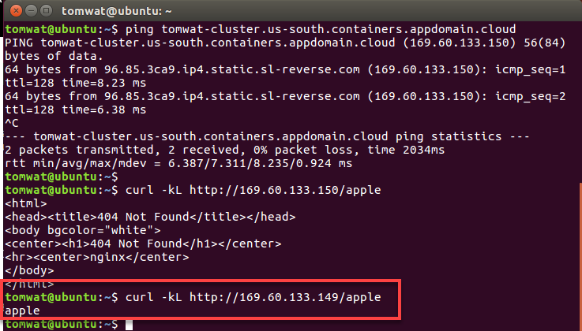